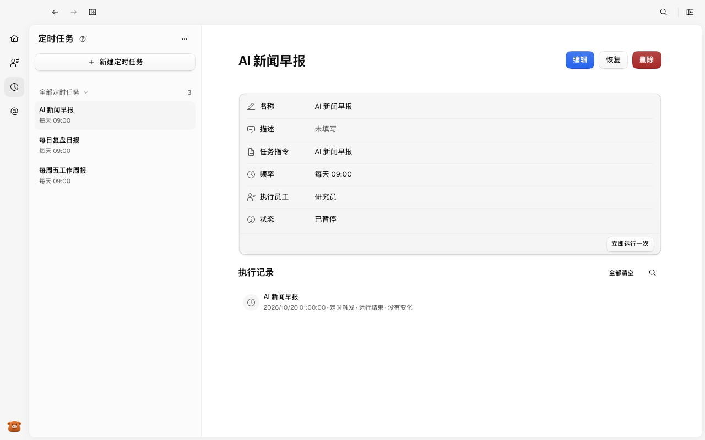

#158 界面预览
commit 8af7b03 · 回到 PR · 该 PR 调整执行记录弹窗左侧栏：清空按钮移到搜索框外右侧，搜索框缩至28px、搜索/清空图标改为12px/10px 并保留危险色悬停；侧栏外层 padding 归零，标题/工具栏和滚动内容各自留白，使滚动区域及滚动条贴住侧栏右边缘。
红线是鼠标走过的轨迹，红色圆环是一次点击；底部文字是这一步在做什么。空格暂停，← → 逐段查看。

执行记录弹窗的紧凑检索与清空 · 定时任务详情，执行记录入口所在位置
 执行记录弹窗的紧凑检索与清空 · 任务详情打开后的界面
执行记录弹窗的紧凑检索与清空 · 任务详情打开后的界面